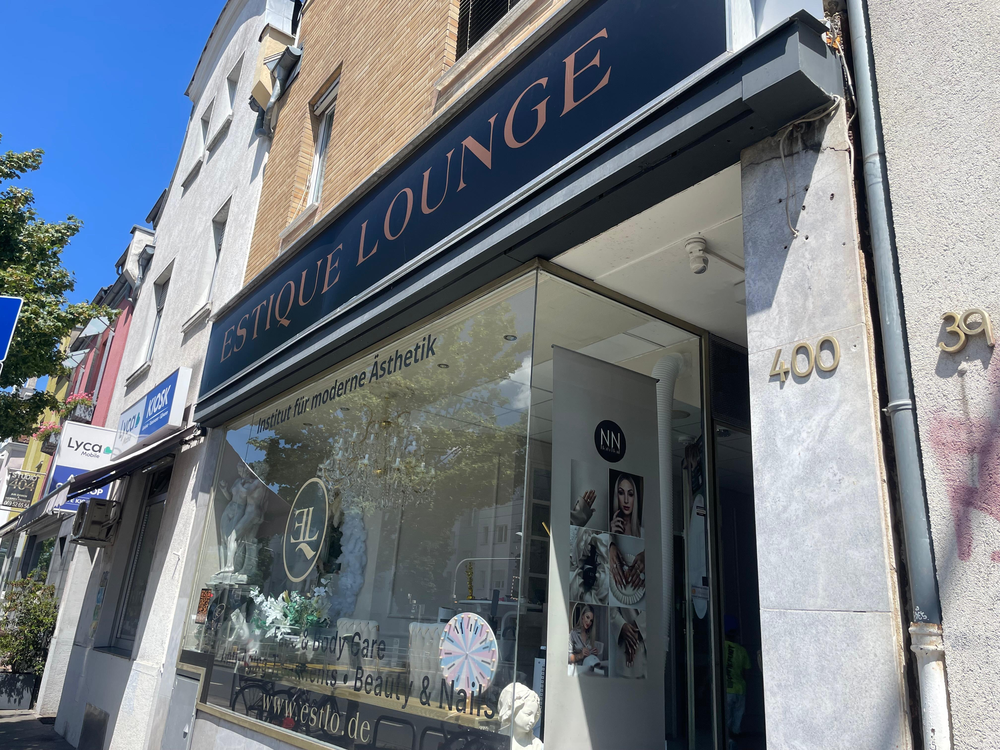

HOT-YELLOW • Frankfurt am Main
Professionelle Laser-Haarentfernung mit modernem 4-Wellen-Diodenlaser. Für Frauen und Männer. NisV-zertifiziert.

Warum HOT-YELLOW?
Bei HOT-YELLOW verbinden wir moderne Beauty-Technologien mit persönlicher Beratung und einer angenehmen Atmosphäre. Jede Behandlung wird individuell auf deine Bedürfnisse abgestimmt.
Behandlungen nach den gesetzlichen Vorgaben mit qualifizierter Beratung.
4-Wellen-Diodenlaser für unterschiedliche Haut- und Haartypen.
Frauen werden von einer Frau, Männer von einem Mann behandelt.
Ehrliche Beratung, transparente Behandlung und ausreichend Zeit für deine Fragen.
Unsere Leistungen
Von der dauerhaften Haarentfernung bis zum Aquafacial – wir bieten moderne kosmetische Behandlungen für ein gepflegtes Erscheinungsbild.
Modernster 4-Wellen-Diodenlaser für Frauen und Männer.
Kosmetische Zahnaufhellung für ein strahlendes Lächeln.
Zur Unterstützung eines ebenmäßigeren Hautbildes.
Tiefenreinigung, Peeling und Feuchtigkeit.
Für einen frischen, natürlichen Glow.
Jede Behandlung beginnt mit einer individuellen Beratung.